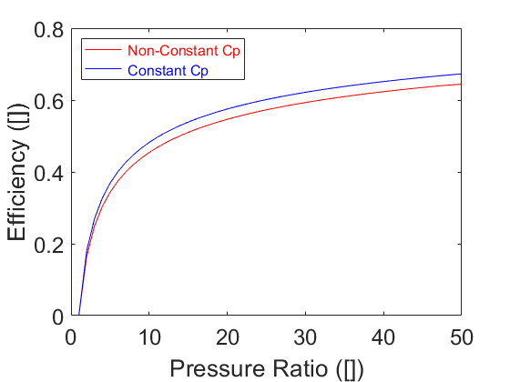
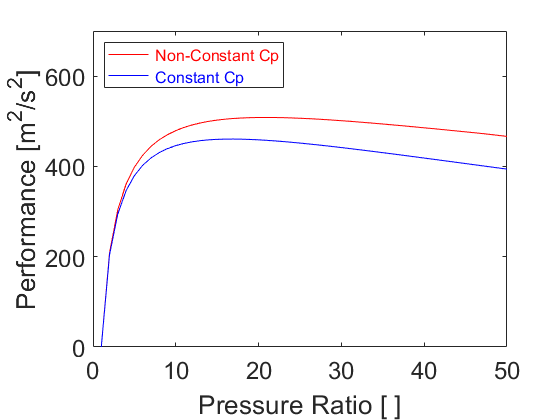
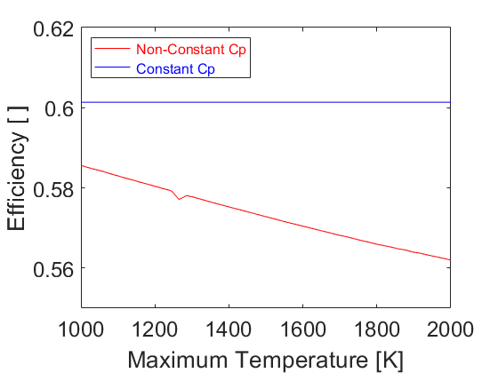
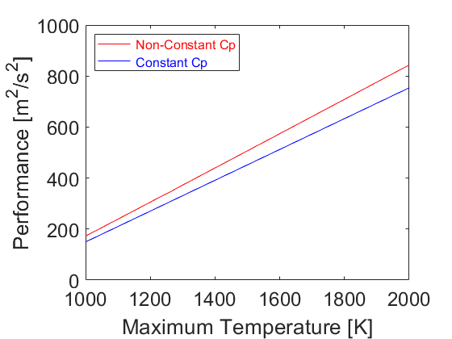
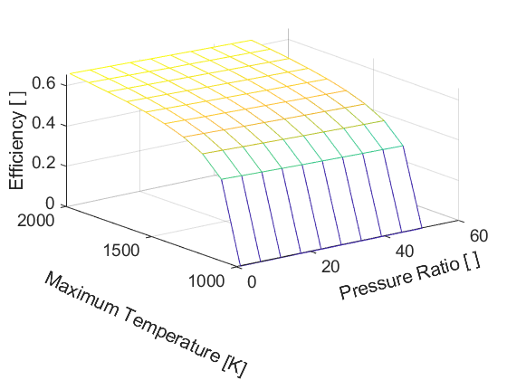
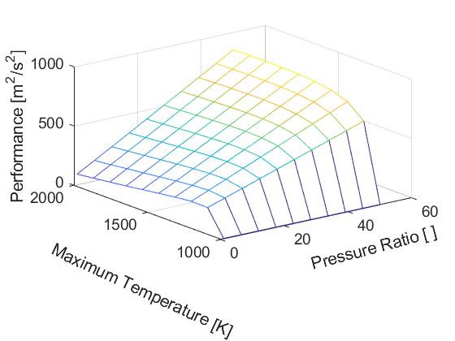
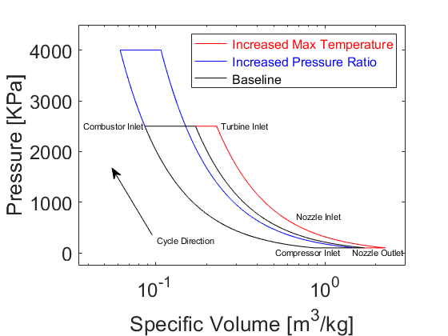
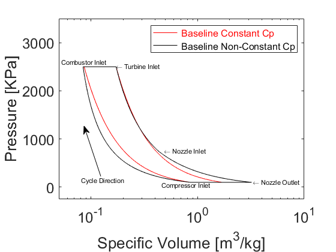
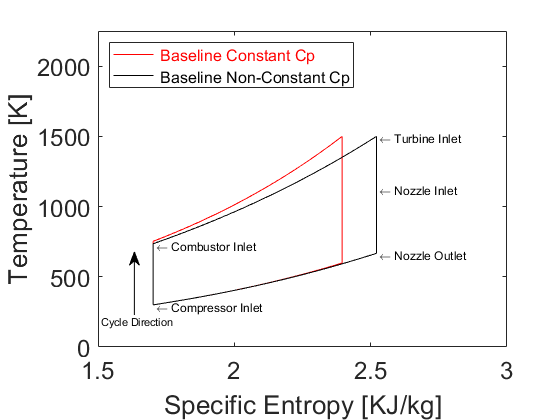

clear all;
close all;
T1 = 300;
P1 = 100;
MaxT1 = 1500;
PR = linspace(1,50,50)';
EfficiencyPRNonCp = zeros(50,1);
PerformancePRNonCp = zeros(50,1);
EfficiencyPRCp = zeros(50,1);
PerformancePRCp = zeros(50,1);
for i = 1:50
[PerformancePRNonCp(i),EfficiencyPRNonCp(i)] = PerformanceEfficiencyNonCp(T1,P1,PR(i),MaxT1);
[PerformancePRCp(i),EfficiencyPRCp(i)] = PerformanceEfficiencyCp(T1,P1,PR(i),MaxT1);
end
T1 = 300;
P1 = 100;
PR2 = 25;
MaxT = linspace(1000,2000,50)';
EfficiencyMaxTNonCp = zeros(50,1);
PerformanceMaxTNonCp = zeros(50,1);
EfficiencyMaxTCp = zeros(50,1);
PerformanceMaxTCp = zeros(50,1);
for i = 1:50
[PerformanceMaxTNonCp(i),EfficiencyMaxTNonCp(i)] = PerformanceEfficiencyNonCp(T1,P1,PR2,MaxT(i));
[PerformanceMaxTCp(i),EfficiencyMaxTCp(i)] = PerformanceEfficiencyCp(T1,P1,PR2,MaxT(i));
end
PR3 = 25;
MaxT2 = 1500;
[PressuresBase,SpecificVolumesBase,TemperaturesBase,SpecificEntropysBase] = CycleDataPvTsCp(PR3,MaxT2);
PR4 = 25;
MaxT3 = 2000;
[PressuresMaxT,SpecificVolumesMaxT,TemperaturesMaxT,SpecificEntropysMaxT] = CycleDataPvTsCp(PR4,MaxT3);
PR5 = 40;
MaxT4 = 1500;
[PressuresPR,SpecificVolumesPR,TemperaturesPR,SpecificEntropysPR] = CycleDataPvTsCp(PR5,MaxT4);
PR3 = 25;
MaxT2 = 1500;
[PressuresBase2,SpecificVolumesBase2,TemperaturesBase2,SpecificEntropysBase2] = CycleDataPvTsNonCp(PR3,MaxT2);
PR4 = 25;
MaxT3 = 2000;
[PressuresMaxT2,SpecificVolumesMaxT2,TemperaturesMaxT2,SpecificEntropysMaxT2] = CycleDataPvTsNonCp(PR4,MaxT3);
PR5 = 40;
MaxT4 = 1500;
[PressuresPR2,SpecificVolumesPR2,TemperaturesPR2,SpecificEntropysPR2] = CycleDataPvTsNonCp(PR5,MaxT4);
Res = 10;
PR2 = linspace(1,50,Res)';
MaxT3 = linspace(1000,2000,Res)';
T1 = 300;
P1 = 100;
[PRx,MaxTy] = meshgrid(PR2,MaxT3);
Performance = zeros(Res,Res);
Thermal_Efficiency = zeros(Res,Res);
for i = 1:Res
for j = 1:Res
[Performance(i,j),Thermal_Efficiency(i,j)] = PerformanceEfficiencyNonCp(T1,P1,PR2(i),MaxT3(j));
end
end
figure(1)
plot(PR,EfficiencyPRNonCp,'r')
hold on
plot(PR,EfficiencyPRCp,'b')
ylabel('Efficiency ([])','FontSize',20)
set(gca,'fontsize',18)
xlabel('Pressure Ratio ([])','FontSize',20)
set(gca,'fontsize',18)
lgd = legend('\color{red} Non-Constant Cp','\color{blue} Constant Cp','Location','northwest');
lgd.FontSize = 12;
hold off
figure(2)
plot(PR,PerformancePRNonCp,'r')
hold on
plot(PR,PerformancePRCp,'b')
ylabel('Performance [m^2/s^2]','FontSize',20)
set(gca,'fontsize',18)
xlabel('Pressure Ratio [ ]','FontSize',20)
set(gca,'fontsize',18)
xlim([0,50])
ylim([0,700])
lgd = legend('\color{red} Non-Constant Cp','\color{blue} Constant Cp','Location','northwest');
lgd.FontSize = 12;
hold off
figure(3)
plot(MaxT,EfficiencyMaxTNonCp,'r')
hold on
plot(MaxT,EfficiencyMaxTCp,'b')
ylabel('Efficiency [ ]','FontSize',20)
set(gca,'fontsize',18)
xlabel('Maximum Temperature [K]','FontSize',20)
set(gca,'fontsize',18)
xlim([1000,2000])
ylim([.55,.62])
lgd = legend('\color{red} Non-Constant Cp','\color{blue} Constant Cp','Location','northwest');
lgd.FontSize = 12;
hold off
figure(4)
plot(MaxT,PerformanceMaxTNonCp,'r')
hold on
plot(MaxT,PerformanceMaxTCp,'b')
ylabel('Performance [m^2/s^2]','FontSize',20)
set(gca,'fontsize',18)
xlabel('Maximum Temperature [K]','FontSize',20)
set(gca,'fontsize',18)
lgd = legend('\color{red} Non-Constant Cp','\color{blue} Constant Cp','Location','northwest');
lgd.FontSize = 12;
hold off
figure(5)
mesh(PRx,MaxTy,Thermal_Efficiency)
xlabel('Pressure Ratio [ ]','Rotation',15,'FontSize',15)
set(gca,'fontsize',14)
ylabel('Maximum Temperature [K]', 'Rotation',-25,'FontSize',15)
set(gca,'fontsize',14)
zlabel('Efficiency [ ]', 'Interpreter', 'none','FontSize',15)
set(gca,'fontsize',14)
hold off
figure(6)
mesh(PRx,MaxTy,Performance)
xlabel('Pressure Ratio [ ]','Rotation',15,'FontSize',15)
set(gca,'fontsize',14)
ylabel('Maximum Temperature [K]', 'Rotation',-25,'FontSize',15)
set(gca,'fontsize',14)
zlabel('Performance [m^2/s^2]','FontSize',15)
set(gca,'fontsize',14)
hold off
figure(7)
semilogx(SpecificVolumesMaxT,PressuresMaxT,'r',SpecificVolumesPR,PressuresPR,'b',SpecificVolumesBase,PressuresBase,'k')
text(SpecificVolumesBase(1)-.35 ,PressuresBase(1)-90 , 'Compressor Inlet','FontSize',8)
text(SpecificVolumesBase(1001)-.049,PressuresBase(1001), 'Combustor Inlet','FontSize',8)
text(SpecificVolumesBase(2001)+.07,PressuresBase(2001), 'Turbine Inlet','FontSize',8)
text(SpecificVolumesBase(3001)+.25,PressuresBase(3001), 'Nozzle Inlet','FontSize',8)
text(SpecificVolumesBase(4001)-.27,PressuresBase(4001)-90, 'Nozzle Outlet','FontSize',8)
annotation('textarrow',[.34,.25],[.3,.5],'String','Cycle Direction','FontSize',8)
ylabel('Pressure [KPa]','FontSize',20)
set(gca,'fontsize',18)
xlabel('Specific Volume [m^3/kg]','FontSize',20)
set(gca,'fontsize',18)
xlim([.035,3])
ylim([-250,4500])
lgd = legend('\color{red} Increased Max Temperature','\color{blue} Increased Pressure Ratio','\color{black} Baseline');
lgd.FontSize = 12;
hold off
figure(8)
plot(SpecificEntropysMaxT,TemperaturesMaxT,'r',SpecificEntropysPR,TemperaturesPR,'b',SpecificEntropysBase,TemperaturesBase,'k')
text(SpecificEntropysBase(1)+.01 ,TemperaturesBase(1)-15 , '\leftarrow Compressor Inlet','FontSize',8)
text(SpecificEntropysBase(1001)+.01,TemperaturesBase(1001)-10, '\leftarrow Combustor Inlet','FontSize',8)
text(SpecificEntropysBase(2001)+.01,TemperaturesBase(2001), '\leftarrow Turbine Inlet','FontSize',8)
text(SpecificEntropysBase(3001)+.01,TemperaturesBase(3001), '\leftarrow Nozzle Inlet','FontSize',8)
text(SpecificEntropysBase(4001)+.01,TemperaturesBase(4001)-15, '\leftarrow Nozzle Outlet','FontSize',8)
annotation('textarrow',[.24,.24],[.25,.4],'String','Cycle Direction','FontSize',8)
ylabel('Temperature [K]','FontSize',20)
set(gca,'fontsize',18)
xlabel('Specific Entropy [KJ/KG]','FontSize',20)
set(gca,'fontsize',18)
xlim([1.5,3])
ylim([0,2500])
lgd = legend('\color{red} Increased Max Temperature','\color{blue} Increased Pressure Ratio','\color{black} Baseline','Location','northwest');
lgd.FontSize = 12;
hold off
figure(9)
semilogx(SpecificVolumesBase,PressuresBase,'r',SpecificVolumesBase2,PressuresBase2,'k')
text(SpecificVolumesBase2(1)-.4 ,PressuresBase2(1)-60 , 'Compressor Inlet','FontSize',8)
text(SpecificVolumesBase2(1001)-.032,PressuresBase2(1001)+90, 'Combustor Inlet','FontSize',8)
text(SpecificVolumesBase2(2001),PressuresBase2(2001), '\leftarrow Turbine Inlet','FontSize',8)
text(SpecificVolumesBase2(3001)+.05,PressuresBase2(3001), '\leftarrow Nozzle Inlet','FontSize',8)
text(SpecificVolumesBase2(4001)+1.35,PressuresBase2(4001), '\leftarrow Nozzle Outlet','FontSize',8)
annotation('textarrow',[.30,.25],[.3,.5],'String','Cycle Direction','FontSize',8)
ylabel('Pressure [KPa]','FontSize',20)
set(gca,'fontsize',18)
xlabel('Specific Volume [m^3/kg]','FontSize',20)
set(gca,'fontsize',18)
xlim([.05,10])
ylim([-250,3500])
lgd = legend('\color{red} Baseline Constant Cp','\color{black} Baseline Non-Constant Cp');
lgd.FontSize = 12;
hold off
figure(10)
plot(SpecificEntropysBase,TemperaturesBase,'r',SpecificEntropysBase2,TemperaturesBase2,'k')
text(SpecificEntropysBase2(1)+.01 ,TemperaturesBase2(1)-15 , '\leftarrow Compressor Inlet','FontSize',9)
text(SpecificEntropysBase2(1001)+.01,TemperaturesBase2(1001)-15, '\leftarrow Combustor Inlet','FontSize',9)
text(SpecificEntropysBase2(2001)+.01,TemperaturesBase2(2001)-15, '\leftarrow Turbine Inlet','FontSize',9)
text(SpecificEntropysBase2(3001)+.01,TemperaturesBase2(3001) , '\leftarrow Nozzle Inlet','FontSize',9)
text(SpecificEntropysBase2(4001)+.01,TemperaturesBase2(4001)-15, '\leftarrow Nozzle Outlet','FontSize',9)
annotation('textarrow',[.24,.24],[.25,.4],'String','Cycle Direction','FontSize',8)
ylabel('Temperature [K]','FontSize',20)
set(gca,'fontsize',18)
xlabel('Specific Entropy [KJ/kg]','FontSize',20)
set(gca,'fontsize',18)
xlim([1.5,3])
ylim([0,2250])
lgd = legend('\color{red} Baseline Constant Cp','\color{black} Baseline Non-Constant Cp','Location','northwest');
lgd.FontSize = 12;
hold off
saveas(figure(1) ,'Efficiency_PR.png')
saveas(figure(2) ,'Performance_PR.png')
saveas(figure(3) ,'Efficiency_MaxT.png')
saveas(figure(4) ,'Performance_MaxT.png')
saveas(figure(5) ,'Efficiency_PR_MaxT.png')
saveas(figure(6) ,'Performance_PR_MaxT.png')
saveas(figure(7) ,'P_v_Constant_Cp.png')
saveas(figure(8) ,'T_s_Constant_Cp.png')
saveas(figure(9) ,'P_v_Cp_NonCp.png')
saveas(figure(10),'T_s_Cp_NonCp.png')
      

 